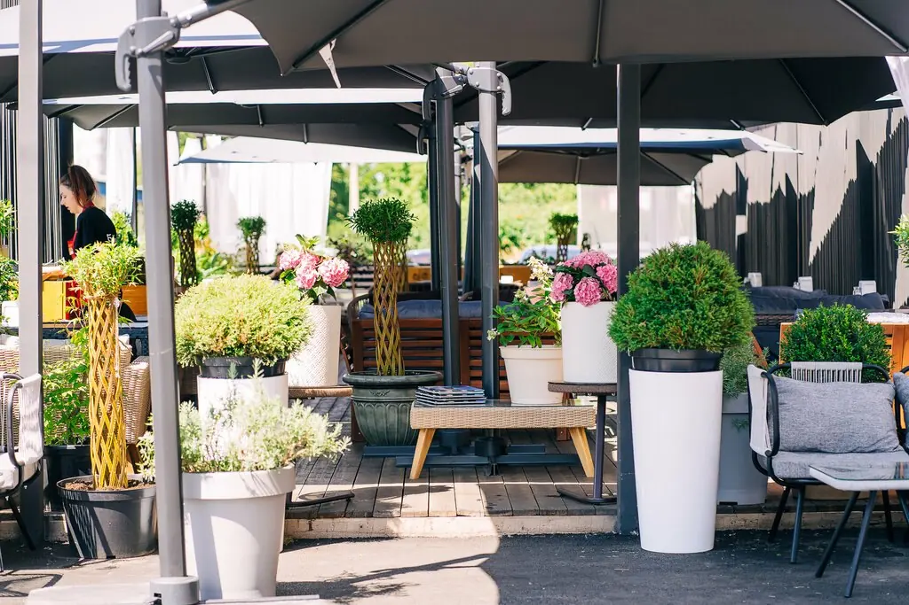
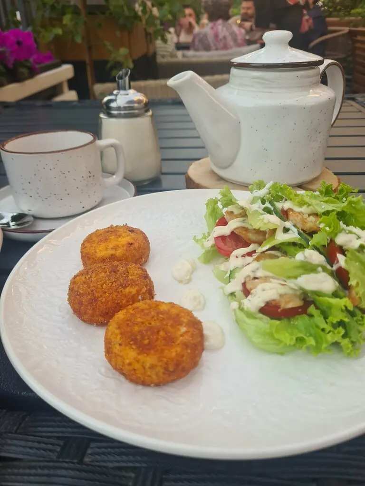
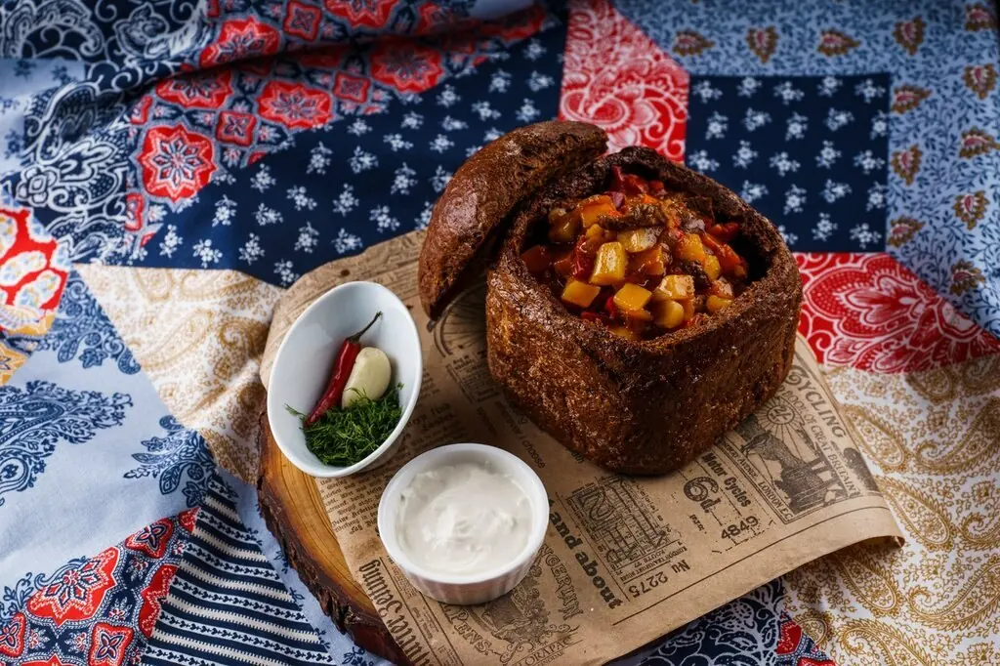
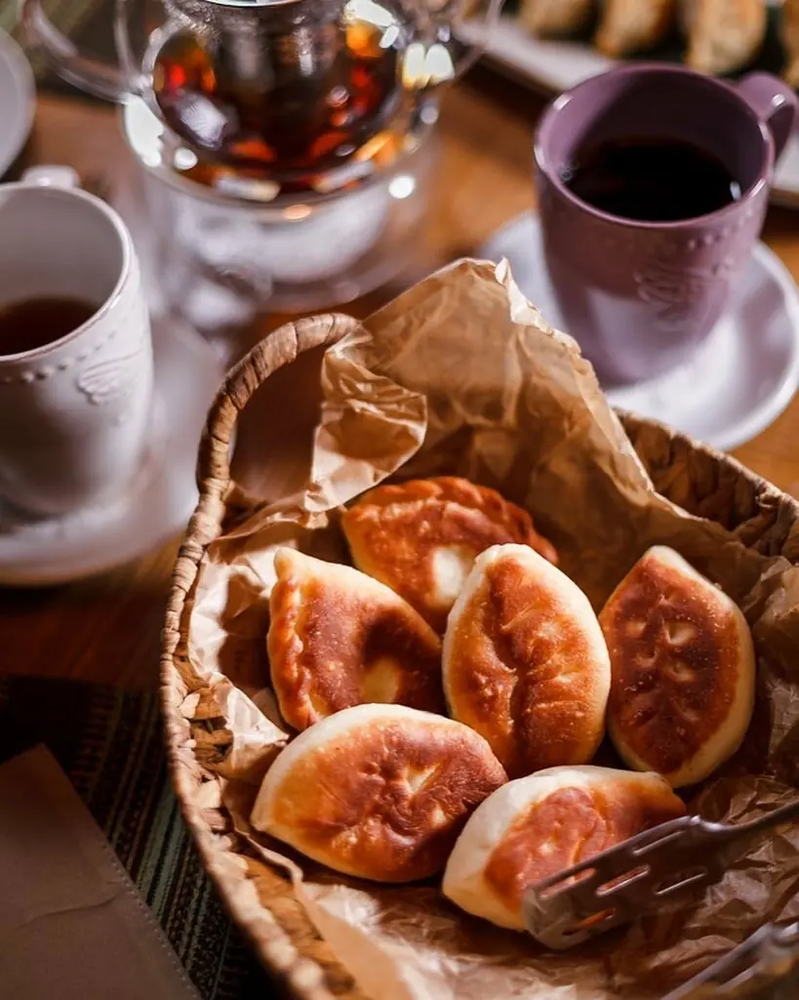
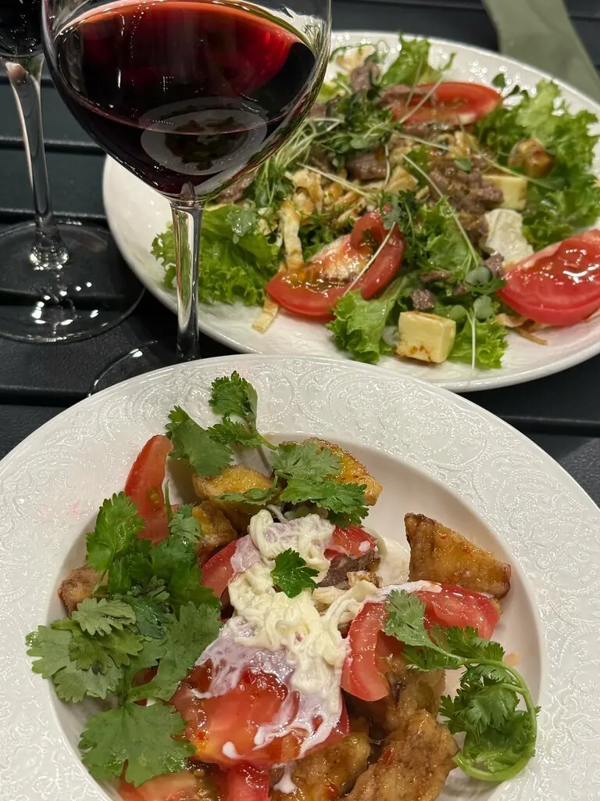

Ставрополь+7 8652 67-57-57
Бабка Тарахто
Опять не ел? Садись давай, остынет.

5,0 · 2866 оценок · премия 2ГИС
Что в холодильнике
Домашний холодец с горчицей555 ₽
Солёные грузди с луком605 ₽
Сельдь с картофелем555 ₽
Оливье классический560 ₽
Куриный паштет с гренками655 ₽
Часть меню с Яндекс Карт, цены уточняйте у официанта.




Внуки пишут
Еда всегда вкусная, мило и уютно как дома.Алина Шульга
Просто шикарное место, блюда вкусные, за что спасибо повару, девчонки приветливые и отзывчивые.Борислав Богатырев
Мне понравилось, я с радостью туда вернусь.Алексей Завялов